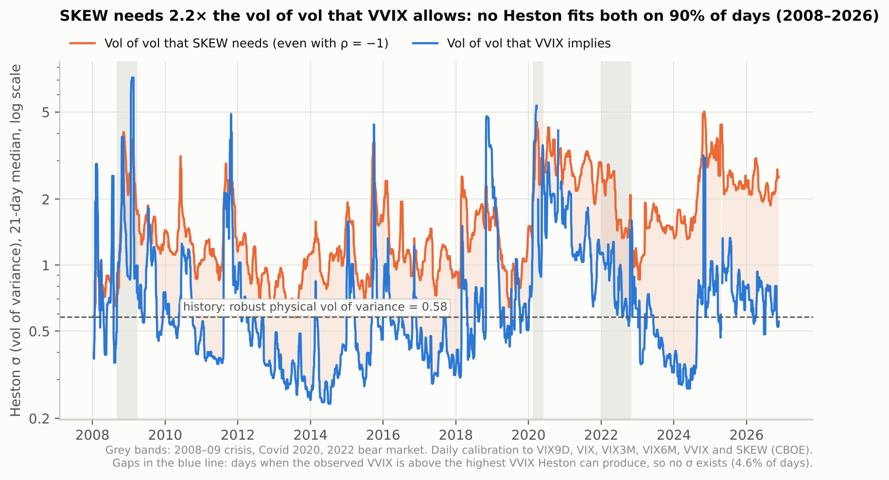
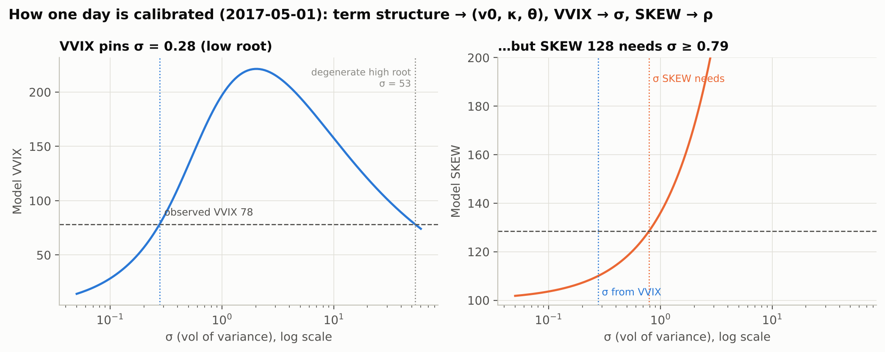
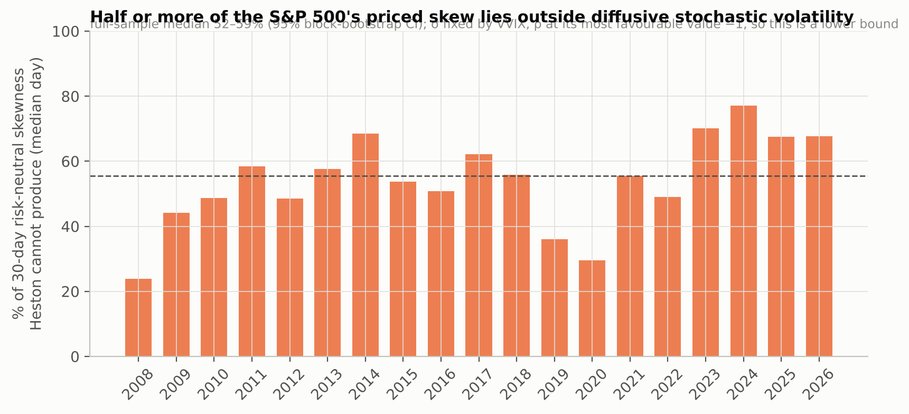
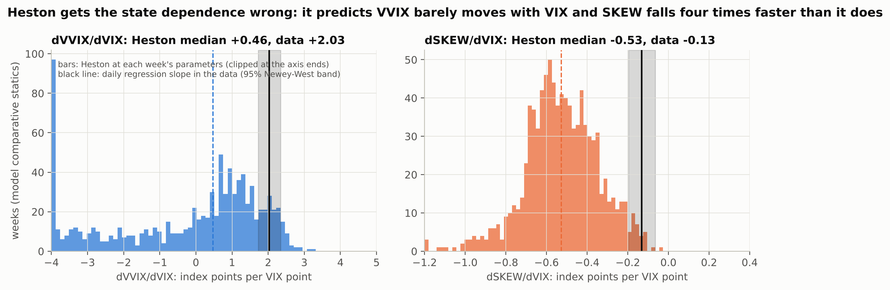
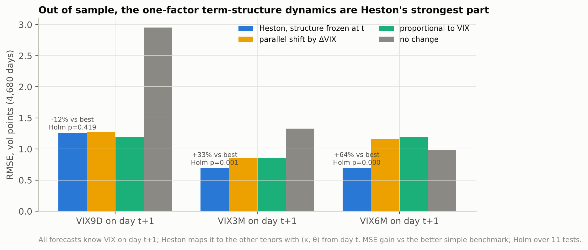
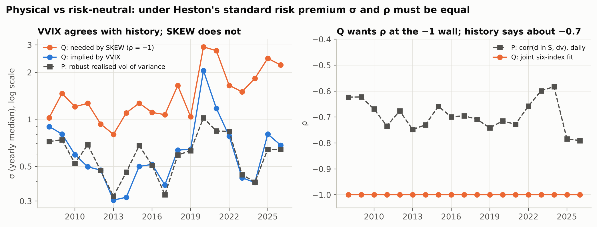
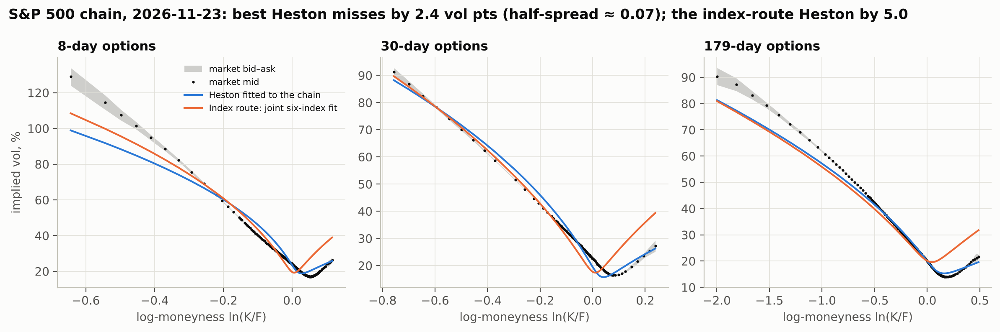

Working paper · Project 26
Project 26 of 30 · Heston calibration · S&P 500, daily, 2008-01-02 to 2026-11-23
Abstract. Calibrating the Heston model usually needs a full option chain, which costs money. CBOE publishes six numbers every day that are model-free summaries of that chain: the VIX term structure (VIX9D, VIX, VIX3M, VIX6M), the 30-day risk-neutral skewness (SKEW) and the vol of VIX (VVIX). Under Heston these six numbers have exact closed forms, and they identify the five parameters in a triangle: the term structure pins (v0, κ, θ), VVIX pins σ (it does not depend on ρ), and SKEW pins ρ. That gives a daily, free, fully reproducible calibration and a built-in consistency test. On 4,681 days the test fails on 90% of them (95% CI 87–93%). The vol of vol that SKEW needs, even with ρ = −1, is a median 2.24× (2.07–2.42) the one VVIX allows, and at least 55% (52–59%) of the priced 30-day skewness is out of reach of diffusive stochastic volatility. The VVIX value agrees with history: σ = 0.58 from VVIX against a robust physical estimate of 0.58 (0.49–0.66). SKEW is the outlier. Exact fits exist on 40% of days only on a second, degenerate branch with σ ≈ 41 and a positive spot-vol correlation (median +0.75, against −0.60 in the data). Heston's comparative statics have the wrong size: it predicts VVIX rising 0.46 points per VIX point (data: 2.03) and SKEW falling 0.53 (data: 0.13). What does survive is the one-factor term structure. Out of sample, freezing (κ, θ) and moving only v cuts next-day VIX3M and VIX6M errors by 33% and 64% against the best simple rule (Holm p ≤ 0.001). On the live S&P 500 chain of 2026-11-23, my replication of the CBOE formulas matches the published VIX to 0.01 points. The best Heston fitted to the 10,454 quotes still misses by 2.4 vol points, 33 times the median half-spread, and needs σ = 5.7, which implies a VVIX of 134 against 119 observed.

Research question. Can the Heston (1993) model be calibrated every day from the free CBOE indices alone? And when it is, do the parameters tell one consistent story across the indices, across time, and between the risk-neutral (Q) and physical (P) worlds?
Heston is the workhorse stochastic-volatility model:
dS/S = √v dW₁, dv = κ(θ − v) dt + σ √v dW₂, corr(dW₁, dW₂) = ρ
The usual way to calibrate it is a least-squares fit to an option chain. That fit is famously ill-posed (flat valleys between κ and σ, parameters that jump from day to day), and it needs data most self-taught researchers do not have. My angle is to replace the chain with the six numbers CBOE already computes from it, because each one has an exact Heston counterpart (Section 3), and the mapping is triangular. With six numbers and five parameters, the system is over-identified by one, and that extra equation is a free daily specification test.
Hypotheses, stated before the main runs:
| Hypothesis | Verdict | |
|---|---|---|
| H1 | SKEW and VVIX cannot be matched by one (σ, ρ) on most days (the index version of the SPX–VIX joint-calibration puzzle) | Supported, 90% of days |
| H2 | At least half of the priced 30-day skewness lies outside what Heston can produce | Supported, 55% (52–59%), a lower bound |
| H3 | Heston's own comparative statics (how SKEW and VVIX move with VIX) match the daily data | Rejected for both |
| H4 | Out of sample, Heston's one-factor term structure beats simple rules for next-day VIX3M/VIX6M | Supported; not for VIX9D |
| H5 | σ and ρ are equal under P and Q, as Heston's standard λ·v risk premium requires | Mixed: σ from VVIX equals robust σᴾ; σ from SKEW and ρ do not |
One estimator in H5 was added after the first run. The sum-of-squares σᴾ was dominated by a few days with huge variance jumps, so I added a robust (median-absolute-deviation) version. Both are reported (Section 4.5).
All series are daily closes from Yahoo Finance, pulled through a browser on 2026-11-23 (details in data/README.md).
| Series | Definition (CBOE) | Horizon | Starts |
|---|---|---|---|
| VIX9D, VIX, VIX3M, VIX6M | √(fair variance) from S&P 500 option strips | 9, 30, 93, 183 days | 2011, 1990, 2006, 2008 |
| SKEW | 100 − 10 × risk-neutral skewness of ln(S_T/F) | 30 days | 1990 |
| VVIX | VIX formula applied to VIX options | 30 days | 2007 |
| S&P 500 (^GSPC) | price index, for the P-measure checks | daily | 1970 |
| S&P 500 option chain | 22,388 quotes, 53 expiries, bid/ask, snapshot 2026-11-23 19:46 UTC | 1 day to 5 years | — |
The sample starts on 2008-01-02, the first day of VIX6M, and has 4,681 days. VIX9D exists only from 2011, so 2008–2010 uses three tenors (ablation A2 drops VIX9D everywhere). The last full day is 2026-11-20. The 2026-11-23 SKEW was not published when the data were pulled, so the chain experiment replicates it. The sample includes every stress window in the brief: 2008–09, Covid 2020 and the 2022 bear market. It also includes a live one, the November 2026 shock, when VIX went from 17.5 on 11-11 to 35.9 on 11-20.
Universe overlap. No earlier project uses the CBOE term-structure, SKEW or VVIX indices. #4 and #16 use VIX only; #14 uses Deribit crypto options. The S&P 500 index is shared with #3, #13, #15 and #16 on purpose, only for the P-measure checks.
Everything is written on the forward, X = ln(S_T/F₀), so rates and dividends never enter. That matches how CBOE defines the indices.
Term structure. Under Heston the fair variance for horizon τ is the expected average variance:
VIX_τ² = θ + (v₀ − θ)·b(τ), b(τ) = (1 − e^{−κτ})/(κτ)
SKEW. CBOE's SKEW is 100 − 10·S, where S is the risk-neutral skewness of X over 30 days. I compute the cumulants of X exactly with a Cauchy contour integral of the cumulant generating function, K(z) = log φ(−iz) (Albrecher et al. "little trap" characteristic function):
c_n = n!/(2πi) ∮ K(z) z^{−n−1} dz, S = c₃ / c₂^{3/2}
The trapezoid rule on a circle is spectrally accurate. It agrees to 10⁻¹² across radii and with Monte Carlo (tests).
VVIX. Under Heston, VIX_T² = a + b·v_T is affine in v_T. The VIX future F_t = E_t[VIX_T] is a continuous martingale, so the model-free variance CBOE computes from VIX options equals the expected quadratic variation of ln F. For a continuous martingale that is −2E[ln(VIX_T/F₀)]. Hence
VVIX² · T = 2 ( ln E[√Y] − ½ E[ln Y] ), Y = a + b·v_T, T = 30 days
Both expectations are one-dimensional integrals of the CIR Laplace transform (√y and ln y have Laplace-type integral representations). The result matches non-central χ² quadrature to 10⁻⁵ (tests). Two consequences matter later. VVIX does not depend on ρ. And VVIX is hump-shaped in σ (Figure 2): above some σ, v is absorbed near zero so often that the vol of VIX falls again.
Options are priced with the COS method (Fang & Oosterlee 2008) and inverted with the robust implied-vol solver of project #4.
Everything is computed day by day from that day's data only, so there is no look-ahead anywhere in the calibration.

| Window | Days | No exact fit (low root) | VVIX unreachable | σ_SKEW / σ_VVIX (median) | Non-Heston share of skew | Feller violated |
|---|---|---|---|---|---|---|
| Full sample 2008–2026 | 4,681 | 89.8% (87.1–92.5) | 4.6% | 2.24 (2.07–2.42) | 55% (52–59) | 38% |
| GFC Sep 2008–Mar 2009 | 146 | 69.9% | 0.0% | 1.77 | 43% | 77% |
| Covid Feb–May 2020 | 72 | 70.8% | 23.6% | 1.18 | 15% | 76% |
| 2022 bear market | 201 | 91.0% | 12.4% | 2.09 | 52% | 55% |
| Nov 2026 shock (11-16 to 11-20) | 5 | 100% | 60% | 3.37 | 52% | 40% |
| Calm: VIX below median | 2,339 | 97.3% | 0.2% | 2.56 | 61% | 21% |
| Turbulent: VIX top decile | 468 | 75.9% | 17.3% | 1.69 | 41% | 66% |
95% moving-block bootstrap CIs (63-day blocks) are in brackets. File: results/e2_feasibility_by_window.csv.
results/e2_by_year.csv). This matches the post-2022 boom in very short-dated options and the steep
short-end skew they carry.
What the joint fit does instead. Forced to fit all six numbers, least squares keeps SKEW and VVIX nearly right (median errors 0.15 and 0.14 "typical days"). It pays for that with the term structure: RMSE 0.70 vol points against 0.13 for the triangular fit. κ is pushed to a median of 19 (half-life 13 days), ρ sits at −1 on 88% of days, and Feller is violated on 88%. The joint fit looks good on SKEW and VVIX only because it quietly breaks the term structure.
Each week I bump v₀ at that week's parameters and read off the model's dVVIX/dVIX and dSKEW/dVIX. I compare them with daily regressions in the data (Newey-West standard errors).
| Heston (median, 10–90%) | Data slope (95% CI) | |
|---|---|---|
| dVVIX / dVIX | +0.46 (−3.9 to +2.0); negative on 42% of weeks | +2.03 (1.72 to 2.34) |
| dSKEW / dVIX | −0.53 (−0.73 to −0.30) | −0.13 (−0.20 to −0.07) |
In Heston the vol of VIX scales roughly like σ/(2√v), so a higher VIX means a lower relative vol of VIX. In the data VVIX rises two points per VIX point. SKEW does fall when VIX rises, but four times more slowly than Heston says. Both failures show up out of sample too: adding Heston's predicted change to today's SKEW makes the next-day forecast 4% worse than "no change" (Holm p = 0.005). For VVIX it is 84% worse (Holm p < 0.001), with a sign hit-rate of 53%.

On day t+1, every forecaster knows that day's VIX. Heston maps it to the other tenors with (κ, θ) frozen at day t. The competitors are a parallel shift (add ΔVIX), a proportional move (scale by VIX_{t+1}/VIX_t), and no change. I use Diebold–Mariano tests with Newey-West (10 lags) and Holm across all 11 forecast tests.
| Target | Heston RMSE | Best simple rule | MSE gain | Holm p |
|---|---|---|---|---|
| VIX9D | 1.26 | proportional 1.20 | −12% | 0.42 |
| VIX3M | 0.70 | proportional 0.85 | +33% | 0.001 |
| VIX6M | 0.70 | no change 0.99 | +50% (+64% vs shift) | <0.001 |
The win mostly holds in stress (results/e4_forecasts_stress.csv). In the GFC, VIX6M RMSE was 1.43 against
1.98 for the best rule; in the Nov 2026 shock, VIX3M was 0.58 against 1.66. There are exceptions. In Covid the
proportional rule beat Heston on VIX3M (1.90 vs 2.59). In 2022 the parallel shift beat it on VIX9D (1.23 vs 1.63)
and on VIX3M (0.58 vs 0.67), while Heston still won on VIX6M (0.73 vs 0.93). The 9-day end is where Heston is
too smooth. That is the same short-maturity problem as SKEW.

v_t is backed out of VIX_t with that day's term-structure fit. All estimators are written on day pairs, and the CIs come from a moving-block bootstrap of pairs with one-year blocks.
| P estimate (95% CI) | Q (median) | Reading | |
|---|---|---|---|
| κ | 5.96 (4.38–13.5), weekly AR(1) of VIX², bias-corrected | 4.40 (term structure) | κᵠ < κᴾ, as a negative variance risk premium implies; borderline |
| σ, sum of squares | 2.75 (1.43–3.53) | — | dominated by a few days of variance jumps |
| σ, robust (MAD) | 0.58 (0.49–0.66) | 0.58 from VVIX; 1.43 needed by SKEW | VVIX = history; SKEW is 2.5× history |
| ρ | −0.60 (−0.67 to −0.56) | −1.00 (joint fit, 88% of days at the wall) | Q wants a correlation that does not exist |

The year-by-year robust σᴾ tracks the VVIX σ closely (left panel). That is the sharpest evidence that VVIX is read correctly by the model and SKEW is not. The two σᴾ estimates bracket the story: the diffusive vol of variance is about 0.6 under both measures. The heavy tail of daily variance moves (the gap between 0.58 and 2.75) is exactly the kind of jump that SKEW prices and Heston cannot represent. With ρ set to its physical value −0.60 instead of −1, the missing share of skewness rises from 55% to 72%.
This is a different route to the same question, so the conclusions do not rest on the indices alone.
Replication. Applying the CBOE strike-selection and variance formulas to the 19:46 UTC chain gives:
| VIX9D | VIX | VIX3M | VIX6M | SKEW | |
|---|---|---|---|---|---|
| Replicated from the chain | 28.17 | 27.43 | 25.89 | 26.18 | 133.99 |
| Published (~20:00 UTC) | 28.96 | 27.42 | 25.80 | 26.12 | not yet out (11-20: 138.84) |
Direct Heston fit. I fit 10,454 OTM options from 7 days to 1 year (each expiry weighted equally, IV errors). The median half-spread is 0.07 vol points.
| v₀ | κ | θ | σ | ρ | IV RMSE | Implied VVIX | Implied SKEW | |
|---|---|---|---|---|---|---|---|---|
| Heston fitted to the chain | 0.095 | 20.7 | 0.062 | 5.73 | −0.72 | 2.41 | 134.1 | 142.0 |
| Index route, joint fit | 0.089 | 26.7 | 0.065 | 10 (bound) | −0.27 | 5.02 | 118.6 | 134.0 |
| Observed | 118.6 | 134.0 |
The triangular route has no solution that day: VVIX 118.6 is above the Heston hump given the term structure, which fits the shock-regime pattern in 4.1. Three readings follow:
results/e6_per_expiry_sigma_rho.csv).
No single σ covers the curve.
Weekly subsample (937 days), results/ablations.csv:
| Variant | Exact fit share | σ_VVIX | σ_SKEW | Ratio | Ratio > 1 |
|---|---|---|---|---|---|
| A0 main | 9.9% | 0.57 | 1.42 | 2.27 | 90% |
| A1 wide bounds κ ∈ [0.02, 80], √θ ≤ 316% | 4.2% | 0.55 | 1.43 | 2.35 | 95% |
| A2 no VIX9D anywhere | 7.3% | 0.56 | 1.37 | 2.26 | 92% |
| A3 κ fixed at 4.4 | 0.2% | 0.59 | 1.35 | 2.25 | 99.8% |
| A4 naive VVIX (instantaneous vol of VIX) | 0.7% | 0.44 | 1.42 | 2.95 | 99% |
The headline ratio stays between 2.25 and 2.35 under every exact specification. The textbook shortcut for VVIX (A4) overstates it by a third, which is why the exact formula matters. κ hits a bound on 26% of days. That is a real identification limit: when the term structure is nearly straight between 9 days and 6 months, κ and θ trade off. It is the reason A3 exists.
Numerical validation (tests/, 14 tests): martingale and normalization of the characteristic function;
cumulants are radius-invariant and match the closed-form mean; the zero-vol-of-vol limit equals Black–Scholes to
10⁻⁸; COS prices match Monte Carlo within 4 standard errors; skewness matches 10⁶-path Monte Carlo; VVIX matches
non-central χ² quadrature to 2·10⁻⁴; VIX futures match simulation; the calibration recovers known parameters
exactly; infeasible days are flagged; and the CBOE moment formulas return σ and zero skewness on a lognormal
strip.
src/heston.py, with QE simulation) as its training
world, and should be judged against the jump share found here.pip install -r requirements.txt
bash run_all.sh # about 15 minutes on 4 cores; ends by running the tests
| Script | What it does |
|---|---|
src/heston.py |
characteristic function, cumulants, VIX/SKEW/VVIX closed forms, COS pricer, QE simulator |
src/calibrate.py |
daily triangular, high-root and joint calibrations → results/daily_calibration.csv |
src/evaluate.py |
E2–E5 tables |
src/ablations.py |
A0–A4 |
src/chain.py |
E6: forwards, CBOE replication, chain fit, per-expiry σ, index-route repricing |
src/figures.py |
all figures |
src/bs.py |
Black–76 pricer and implied-vol solver, reused from #4 |
Albrecher, Mayer, Schoutens & Tistaert (2007), The little Heston trap. Andersen (2008), Simple and efficient simulation of the Heston model (QE scheme). Bakshi, Kapadia & Madan (2003), Stock return characteristics, skew laws. CBOE, SKEW Index, VIX and VVIX white papers. Fang & Oosterlee (2008), A novel pricing method based on Fourier-cosine series. Gatheral (2008), Consistent modeling of SPX and VIX options. Heston (1993). Kendall (1954), bias of the AR(1) estimator. Bates (1996), Jumps and stochastic volatility. Diebold & Mariano (1995). Holm (1979).